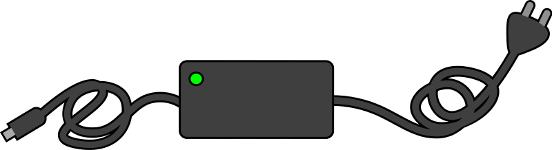

1 Techninė ir programinė įranga
1.1 Techninės įrangos reikalavimai
Renginio transliacijos metu galima tikėtis, jog kompiuteris (nešiojamas ar stacionarus) bus pilnai apkrautas ir papildomas jo naudojimas gali daryti neigiamą įtaką transliacijos ir video įrašo kokybei. Transliacijos metu turi būti deaktyvuotas mikrofonas, todėl įrenginys nebūtų panaudojamas dalyvavimui renginyje. Dėl šių dviejų priežasčių rekomenduojama naudoti dedikuotą kompiuterį šiai užduočiai.
Reikalavimai:
- Procesorius:
- minimum
Intel i-5 - geriau
Intel i-7
- minimum
- Darbinės atminties (RAM)
- minimum 8 GB
- geriau 16 GB
Pasitikrinti galima
START->About your PCarbaSTART->Settings->System->About
1.2 Interneto sparta
Spartą galima pasitikrinti https://www.speedtest.net/.
Jeigu WIFI sparta atsiuntimo (download) ir išsiuntimo (upload) yra mažesnė nei 20 Mbps patartina kompiuterį / notebooką jungti su ethernet kabeliu į maršrutizatorių (router), taip ženkliai pagerinant internetinę spartą.

1.3 Energijos tiekimas
Transliuojant visada turi būti įjungtas elektros tiekimo kabelis.

1.4 Programinės įrangos reikalavimai
Transliacijai reikalingos šios programos:
- GIMP
- naudojama grafikų (užsklandų / banner’ių) paruošimui
- nemokama (laisva), atviro kodo programa
- https://www.gimp.org/downloads/
- OBS Studio (transliavimui): nemokama (laisva), atviro kodo programa
- naudojama video transliavimui
- nemokama (laisva), atviro kodo programa
- https://obsproject.com/download
Tikėtina, jog abiejų programų instaliavimui gali prireikti IT komandos pagalbos (leidimo instaliuoti darbiniame kompiuteryje). Todėl rekomenduojama instaliavimo ir testavimo procesus atlikti kuo galima anksčiau.
1.4.1 Windows nustatymai
“Windows updates” rekomenduojama pasitikrinti ar Windows operacinė sistema yra turi visus atnaujinimus, jeigu reikia, atlikti atnaujinimus ir restartuoti kompiuterį, taip užtikrinant, jog Windows neinicijuos atnaujinimų ar restartavimo translaicijos metu.
Windows mikrofo išjungimas yra reikalingas tam, kad transliuoant MS TEAMS susiitkimą, ekrana neatsiratų pop-up langelis, nurodantis, kad kalbant reikia įsijungti mikrofoną, atitinkamai šis langelis būtų matomas tranliacijos video įraše
Task-bar lock nuėmimas (opcionalu)
Energijos nustatymai
1.4.2 OBS-Studio nustatymai
Paskyros sujungimas su Youtube
Studio mode
Aplanko Windows aplinkoje suskūrimas (pvz. OBS_transliacijos) ir nustatymas, jog video įrašai turėtų būti saugomi šiame aplanke
Video nustatymai
Output nustatymai
Papildomi nustatymai bus aptarti “Transliacijos” skyriuje
1.4.3 Teams nustatymai
Standartinis TEAMS nustatymas yra, jog renginio organizatorius arba dalyvis turi patvrinti kiekvieną norintį prisjungti prie susitikimo. Dėl šios priežasties ekrane atsiranda pop-up pranešimas apie norinčius porisijungti, be to, girdimimas pranšimo signalas. Tad kad būtų išvengta šių video ir garsinių trikdžių rekomenduojami šie nustytamai:
- Who can bypass the lobby pakeisti į Everynone
- Announce when callers join ir leave išjungti